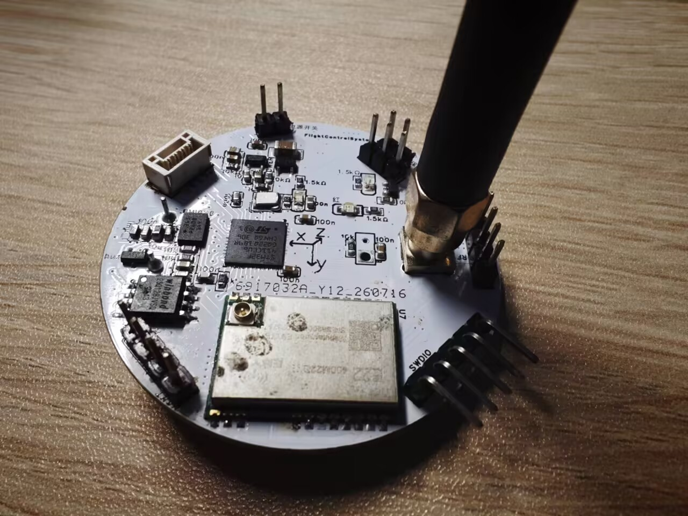
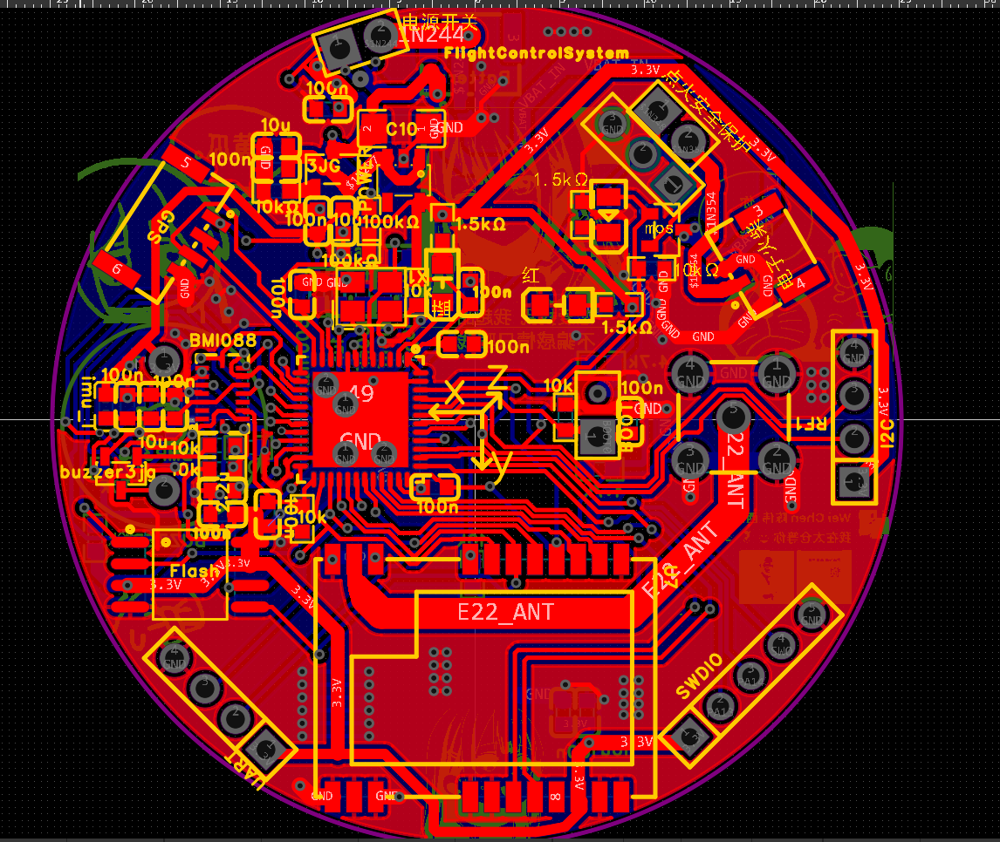

V2版本航电
文档AI等级：2


设计目标
- 上一代模块化飞控采用所有模块单独焊接到一个独立板子上的构造，这种构造非常浪费板内空间，所以这次版本航电采用最小电子元件集成式的焊接模式。
- 且上一代飞控的软件系统过于简陋，本次飞控软件系统建立全新的火箭标准库RSL，并且引入FreeRtos来进行任务调度，总体复杂度和可开发性上升一个量级。
- 支持实验火箭自主飞行数据采集
- 支持实时LoRa遥测
- 支持飞行状态判断
- 支持后续扩展视觉识别模块
- 提供长期维护的软件架构
版本信息
| 项目 | 内容 |
|---|---|
| 硬件版本 | V2.1 |
| 开始设计 | 2026-07 |
| 当前状态 | 软件集成阶段 |
| MCU | STM32F411 |
| RTOS | FreeRTOS |
| PCB状态 | 已完成 |
| 飞行状态 | 未进行实际飞行 |
基本介绍
本航电于2026年7月开始设计，基于STM32F411与FreeRTOS的实验火箭飞行控制系统，集成姿态解算、GNSS 定位、LoRa 遥测与飞行数据记录。
硬件介绍
| 模块 | 型号 | 用途 |
|---|---|---|
| MCU | STM32F411 | 主控制器 |
| IMU | BMI088 | 六轴惯性测量 |
| GNSS | NEO-M9N | 定位 |
| LoRa | SX1268 | 无线通信 |
| Flash | W25Q128 | 数据存储 |
| 气压计 | BMP388 | 高度测量 |
系统功能
姿态系统
- BMI088数据采集
- 四元数AHRS解算
- 姿态输出
通信系统
- SX1268驱动
- LoRa双向通信
- 遥测发送
- 地面站指令接收
数据系统
- Flash存储
- Logger框架
- 自描述数据格式
飞行控制
- 状态机
- 飞行阶段识别
- 开伞控制
当前进度
项目目前处于软件功能集成与系统联调阶段。
细节说明
软件设计说明
Command Context 设计
在application层的命令系统中，在处理回调函数时，由于命令解析框架（RSL CommandEngine）中的回调函数由框架主动调用，其执行上下文不再处于原本的RocketCommand对象成员函数调用链中，因此需要通过context将Application层对象传递给回调函数在app_command->mid_command->回调函数这一整个链条里面，保留了一个“context”指针，app_handler文件里面的回调函数可以通过context来操作rocket类里面的其他对象的指针。
Commander 设计
rocket类作为总类，其下包含若干个commander类指针，而每个commander类实例只能包含一个数据来源，比如UARTcommander，LORAcommander。
本航电拥有两个commander，UARTcommander和LoRacommander，而每个commander对应一个数据的来源，这个数据来源函数需要转移两个数据：一个是数据的Buffer指针，另一个是数据的长度，本版本航电中，UART数据采用的是系统中断回调，放在tsk_isr内，当UART收到一个包，HAL库会中断并自动调用uart1Callback这个函数，紧接着调用rocket类内的receiveUARTCommandData函数，receiveUARTCommandData函数的作用是在中断内把Buffer指针和数据长度的信息转移到rocket类内的私有变量，并且把标志位置为收到Data的状态，而住循环内的另一个函数handleUARTCommandData在检测到标志位后自动处理rocket类内私有变量（buffer）所存储的Data。这样设计是为了把“数据写入”和“数据解析”分开，避免中断内处理大量解析的操作，占用中断。
接着上文，而LoraCommander的数据来源来自于app层内Communication封装里面的communicatorLoop函数，这个函数会不断循环，承担两个作用：将rocket其他部分的发送请求所产生的队列内的待发送包发送出去，以及在不发送的时候将lora硬件置为Rx接收状态，当接收到数据时，在communicatorLoop的输入值内把标志位置1并返回buffer的指针。所以可以看到Lora的信息来自于RocketTask在调用communicatorLoop的自我循环，不需要中断，而Rocket类大可以直接在communicatorLoop后面直接判断是否收到消息并调用commander解析，但是处于两个考虑：1 为了让commander的格式尽可能相同。2以后communicatorLoop可能不在rocketLoop中循环而是加入中断等其他措施。所以communicatorLoop执行完的后面，同样延续了UartCommand的结构，先把communicatorLoop接收到的buffer转换到rocket类内自己的buffer里面，然后把自己的标志位置1，主循环内的handleLoraCommandData会自动去解析收到的一包数据。